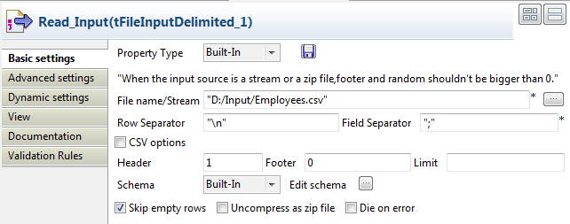
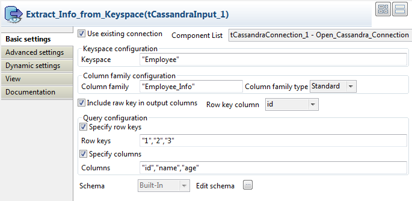

Avertissement
Ce composant est disponible dans la Palette du Studio si vous avez souscrit à l'édition correspondante de Talend Big Data Studio.
|
Famille de composant |
Big Data / Cassandra | |
|
Fonction |
Le composant tCassandraInput vous permet de lire des données d'un espace de clé (keyspace) Cassandra et d'envoyer des données dans un flux Talend. | |
|
Objectif |
Le tCassandraInput lit des données d'un keyspace Cassandra spécifié et envoie les données au composant suivant. | |
|
Basic settings |
Use existing connection | Cochez cette case et sélectionnez le composant de connexion adéquat à partir de la liste Component list pour réutiliser les paramètres d’une connexion que vous avez déjà définie. |
|
Host |
Saisissez le nom de l'hôte ou l'adresse IP du serveur Cassandra. | |
|
Port |
Saisissez le numéro du port d'écoute du serveur Cassandra. | |
|
Required authentication |
Cochez cette case afin de saisir vos identifiants de connexion à Cassandra. Cette case apparaît si vous ne cochez pas la case Use existing connection. | |
|
Username |
Saisissez dans ce champ l'identifiant d'authentification à Cassandra. | |
|
Password |
Saisissez dans ce champ le mot de passe d'authentification à Cassandra. | |
|
Keyspace configuration |
Keyspace |
Saisissez le nom de l'espace de clé duquel vous souhaitez lire les données. |
|
Column family configuration |
Column family |
Saisissez le nom de la famille de colonnes de laquelle vous souhaitez lire les données. |
|
Column family type |
Standard : Famille de colonnes de type standard. Super : Famille de colonnes de type super. | |
|
Include row key in output columns |
Cochez cette case pour inclure la clé de ligne de la famille de colonnes dans les colonnes de sortie. | |
|
Row key type |
Sélectionnez dans la liste le type de données approprié de la clé de ligne. Cette liste déroulante apparaît uniquement si vous ne cochez pas la case Include row key in output columns. | |
|
Row key column |
Sélectionnez la colonne de clé de ligne dans la liste. | |
|
Include super columns in output columns |
Cochez cette case pour inclure les super colonnes de la famille de colonnes dans les colonnes de sortie. Cette case apparaît si vous sélectionnez Super dans la liste Column family type. | |
|
Super column type |
Sélectionnez dans la liste le type de données approprié de la super colonne. Cette liste déroulante apparaît uniquement si vous ne cochez pas la case Include super columns in output columns. | |
|
Super columns |
Sélectionnez la super colonne, dans la liste. | |
|
Query configuration |
Specify row keys |
Cochez cette case afin de spécifier les clés des lignes de la famille de colonnes. |
|
Row Keys |
Saisissez les clés de lignes spécifiques dans la famille de colonnes, au format correct selon le type de clé de ligne. Ce champ apparaît si vous cochez la case Specify row keys. | |
|
Key start |
Saisissez la clé de la ligne de début du type de données correct. | |
|
Key end |
Saisissez la clé de la ligne de fin du type de données correct. | |
|
Key limit |
Saisissez le nombre de lignes à lire entre la ligne de début et la ligne de fin. | |
|
Specify columns |
Cochez cette case afin de spécifier directement le nom des colonnes de la famille de colonnes. | |
|
Columns |
Spécifiez directement le nom des colonnes de la famille de colonnes, au format correct selon le type de colonne. Ce champ apparaît si vous cochez la case Specify columns. | |
|
Columns range start |
Saisissez le nom de la colonne de début du type de données correct. | |
|
Columns range end |
Saisissez le nom de la colonne de fin du type de données correct. | |
|
Columns range limit |
Saisissiez le nombre de colonnes à lire entre la colonne de début et la colonne de fin. | |
|
Schema et Edit Schema |
Un schéma est une description de lignes, il définit le nombre de champs qui sont traités et passés au composant suivant. Le schéma est soit Built-in, soit stocké dans le Repository. Si vous utilisez Talend Open Studio for Big Data, seul le mode Built-in est disponible. | |
|
Advanced settings |
tStatCatcher Statistics |
Cochez cette case pour collecter les données de log au niveau du Job ainsi qu'au niveau de chaque composant. |
Ce scénario décrit un Job simple qui lit des données relatives à des employés dans un fichier CSV, écrit les données dans un keyspace Cassandra, extrait les informations personnelles de certains employés, puis affiche les informations dans la console.

Ce scénario nécessite six composants :
un tCassandraConnection pour ouvrir une connexion au serveur Cassandra.
un tFileInputDelimited pour lire le fichier d'entrée, définir la structure des données et les envoie au composant suivant.
un tCassandraOutput pour écrire les données reçues du composant précédent dans un espace de clé (keyspace) Cassandra.
un tCassandraInput pour lire les données du keyspace Cassandra.
un tLogRow pour afficher dans la console les données reçues du composant précédent.
et un tCassandraClose pour fermer la connexion au serveur Cassandra.
Déposez les composants suivants de la Palette dans l'espace de modélisation graphique : un tCassandraConnection, un tFileInputDelimited, un tCassandraOutput, un tCassandraInput, un tLogRow et un tCassandraClose.
Connectez le tFileInputDelimited au tCassandraOutput à l'aide d'un lien Row > Main.
Répétez l’opération pour relier le tCassandraInput au tLogRow.
Connectez le tCassandraConnection au tFileInputDelimited à l'aide d'un lien Trigger > OnSubjobOk.
Répétez l'opération pour relier le tFileInputDelimited au tCassandraInput et le tCassandraInput au tCassandraClose.
Renommez les composants afin de mieux identifier leur rôle.
Procédure 1.7. Ouvrir une connexion Cassandra
Double-cliquez sur le tCassandraConnection pour ouvrir sa vue Basic settings.

Dans le champ Server, saisissez le nom de l'hôte ou l'adresse IP du serveur Cassandra. Dans cet exemple, saisissez localhost.
Dans le champ Port, saisissez le numéro du port d'écoute du serveur Cassandra.
Si nécessaire, saisissez vos informations d'authentification à Cassandra : votre identifiant dans le champ Username et votre mot de passe dans le champ Password.
Procédure 1.8. Lire les données d'entrée
Double-cliquez sur le composant tFileInputDelimited pour ouvrir sa vue Component.
Cliquez sur le bouton [...] à côté du champ File Name/Stream afin de parcourir votre système jusqu'au fichier duquel vous souhaitez lire les données. Dans ce scénario, le répertoire est D:/Input/Employees.csv. Le fichier CSV contient quatre colonnes : id, age, name et ManagerID.
id;age;name;ManagerID 1;20;Alex;1 2;40;Peter;1 3;25;Mark;1 4;26;Michael;1 5;30;Christophe;2 6;26;Stephane;3 7;37;Cedric;3 8;52;Bill;4 9;43;Jack;2 10;28;Andrews;4
Cliquez sur Edit schema pour définir les données à passer au composant tCassandraOutput.

Procédure 1.9. Ecrire des données dans un keyspace Cassandra
Double-cliquez sur le tCassandraOutput pour ouvrir sa vue Basic settings.

Saisissez les informations requises pour la connexion ou cochez la case Use existing connection afin d'utiliser la connexion précédemment configurée. Dans ce scénario, la case Use existing connection est cochée.
Dans la zone Keyspace configuration, saisissez le nom du keyspace : Employee, dans cet exemple.
Dans la zone Column family configuration, saisissez le nom de la famille de colonnes : Employee_Info, dans cet exemple.
Dans la liste Action on data, sélectionnez l'action que vous souhaitez effectuer.
Cliquez sur le bouton Sync columns pour récupérer le schéma du composant précédent.
Sélectionnez la colonne de clé dans la liste Key column. Si nécessaire, cochez la case Include key in columns.
Procédure 1.10. Lire des données d'un keyspace Cassandra
Double-cliquez sur le composant tCassandraInput pour ouvrir sa vue Component.
Saisissez les informations requises pour la connexion ou cochez la case Use existing connection afin d'utiliser la connexion précédemment configurée. Dans ce scénario, la case Use existing connection est cochée.
Dans la zone Keyspace configuration, saisissez le nom de l'espace de clé : Employee, dans cet exemple.
Dans la zone Column family configuration, saisissez le nom de la famille de colonnes : Employee_Info, dans cet exemple.
Si nécessaire, cochez la case Include key in output columns, puis sélectionnez, dans la liste Key column, la colonne clé de la famille de colonnes que vous souhaitez inclure.
Dans la zone Query configuration, cochez la case Specify row keys et spécifiez les clés de lignes. Dans cet exemple, trois lignes doivent être lues. Cochez la case Specify columns et spécifiez le nom des colonnes de la famille de colonnes. Ce scénario permet de lire trois colonnes du : id, name et age.
Si nécessaire, les champs Key start et Key end vous permettent de définir l'écart de lignes. Le champ Key limit vous permet de spécifier le nombre de lignes à l'intérieur de l'écart de lignes à lire. De la même manière, les champs Columns range start et Columns range end vous permettent de définir l'écart de colonnes dans la famille de colonnes. Le champ Columns range limit vous permet de spécifier le nombre de colonnes dans l'écart de colonnes à lire.
Cliquez sur le bouton Edit schema afin de définir la structure des données à lire du keyspace Cassandra.